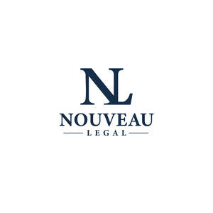

Trade Mark Journal No.2025/031 1 August 2025
UK00004239092 24 July 2025 (35,41,45)

- Class 35
- Administrative services relating to the management of legal dockets; Administrative services relating to the referral of clients to lawyers; Consultancy regarding business organisation and business economics; Business consulting; Business planning and business continuity consulting; Business administration; Business management advice relating to manufacturing business; Business consultancy to firms; Business consulting for enterprises; Business consultancy; Business auditing; Business administration consultancy; Business advisory services relating to business liquidations; Business management; Business studies; Commercial business management; Business management and consulting; Business management consulting; Business supervision; Business management for shops; Business expertise; Business organization consulting; Professional business consulting; Advisory services relating to business management and business operations; Business investigations; Investigations (Business -); Business appraisals and evaluations in business matters; Business planning; Business marketing consultancy; Business research for new businesses; Business administration services; Business research; Research (Business -); Professional business consultation relating to the operation of businesses; Business advice; Business consultation; Business organisation consulting; Consultancy (Professional business -); Professional business consultancy; Business consultancy (Professional -); Chartered accountancy business services; Business consulting services; Business assistance relating to business image; Business management of restaurants; Business management of theaters; Business marketing consulting services; Business marketing services; Business organization consultancy; Planning concerning business management, namely, searching for partners for amalgamations and business take-overs as well as for business establishments; Business information for enterprises (Provision of -); Business administration and management; Business management and administration; Business management and consultancy; Business management consultancy; Administration of foreign business affairs; Business research consulting; Business services relating to the establishment of businesses; Business organization advice; Administration of the business affairs of retail stores; Business accounting advisory services; Business appraisal; Business brokerage services; Business management assistance in the field of franchising; Business consultancy to individuals; Business investigation; Business management of airports; Business planning consultancy; Provision of business data; Business management advice; Business organization and operation consultancy; Business planning services for enterprises; Business advice relating to restaurant franchising; Business networking; Business organization and management consulting; Business relocation consulting; Provision of business and commercial information; Provision of commercial information [business]; Business management of hospitals; Business management consultancy in the field of corporate travel; Business records management; Business organisation; Advice in the field of business management and marketing; Business consulting services in the agriculture field; Business acquisitions; Business process management and consulting; Business strategy services; Advisory services (Business -) relating to the management of public sector businesses; Business management of entertainers; Advisory services (Business -) relating to the management of businesses; Business analysis; Business consultancy services relating to insolvency; Business management services; Economic studies for business purposes; Business management and enterprise organization consultancy; Business management of actors; Business partnership search; Business assistance; Commercial assistance in business management; Business management and consultation; Business management consultation; Business organisation and management consulting; Business management and consulting services; Business management consulting services; Business appraisal consultancy; Business information for enterprises; Business planning services; Business inquiries; Inquiries (Business -); Franchising (Business advisory services relating to -); Business advisory services relating to franchising; Business administration services in the field of healthcare; Assistance in franchised commercial business management; Business consultancy services; Business advice relating to accounting; Business management assistance for industrial or commercial companies; Business appraisals; Appraisals (Business -); Business promotion; Management assistance in business affairs; Hotels (Business management of -); Business management and organization consultancy; Business management advisory services relating to commercial enterprises; Business advice relating to franchising; Franchising (Business advice relating to -); Strategic business consultancy; Assistance to commercial enterprises in the management of their business; Professional consultancy relating to business management; Consultancy relating to business advertising; Advising commercial enterprises in the conduct of their business.
- Class 41
- Legal education services; Training relating to the provision of legal services; Providing continuing legal education courses; Tuition in law.
- Class 45
- Legal conveyancing; Legal advice; Legal services; Legal research; Legal drafting; Legal advice and representation; Legal advocacy services; Patent licensing [legal services]; Legal investigation services; Provision of legal research; Legal research services; Certification of legal documents; Legal mediation services; Mediation [legal services]; Mediation in legal procedures; Legal consultation services; Registration services (legal); Licensing of intellectual property [legal services]; Legal services in the field of immigration; Personal legal affairs consultancy; Legal consultation in the field of taxation; Legal compliance auditing; Provision of expert legal opinions; Legal services relating to copyright licensing; Legal aid services; Legal support services; Legal consultancy services; Legal services relating to wills; Provision of legal information; Legal information services; Legal services provided in relation to lawsuits; Pro bono legal services; Legal and judicial research services in the field of intellectual property; Monitoring intellectual property rights for legal advisory purposes; Professional legal consultations relating to franchising; Legal consultancy relating to intellectual property rights; Legal services relating to business; Licensing of trademarks [legal services]; Legal advice relating to franchising; Advisory services relating to consumers rights [legal advice]; Licensing of software [legal services]; Software licensing [legal services]; Legal process serving; Trademark monitoring [legal services]; Attorney services [legal services]; Compilation of legal information; Expert consultancy relating to legal issues; Legal services relating to intellectual property rights; Legal document preparation services; Legal services relating to social insurance claims; Legal services relating to licences; Trademark watch services for legal advisory purposes; Licensing of patent applications [legal services]; Legal watching services; Licensing of intellectual property in the field of copyrights [legal services]; Cartoon character licensing [legal services]; Monitoring industrial property rights for legal advisory purposes; Legal services relating to the exploitation of copyright for printed matter; Preparation of legal reports; Licensing of registered designs [legal services]; Legal services for procedures relating to industrial property rights; Legal services relating to the exploitation of patents; Legal research in the field of environmental protection; Legal information research services; Licensing [legal services] in the framework of software publishing; Licensing of intellectual property in the field of trademarks [legal services]; Legal assistance in the drawing up of contracts; Legal services relating to the exploitation of intellectual property rights; Legal services in the field of child protection; Legal consultancy relating to patent mapping; Legal research relating to real estate transactions; Conveyancing services [legal services]; Legal services relating to the exploitation of broadcasting rights; Bailiff services (legal services); Alternative dispute resolution services [legal services]; Legal services relating to the exploitation of copyright and industrial property rights; Legal services relating to the management and exploitation of copyright and ancillary copyright; Preparation of legal reports in the field of human rights; Legal services relating to the acquisition of intellectual property; Legal services relating to the exploitation of transmission rights; Information services relating to legal matters; Granting of software licenses [legal services]; Legal services relating to the registration of trademarks; Legal services relating to the exploitation of film copyright; Legal services relating to the negotiation and drafting of contracts relating to intellectual property rights; Information, advisory and consultancy services relating to legal matters; Licensing of computer software [legal services]; Computer software (Licensing of -) [legal services]; Computer software licensing [legal services]; Granting of software licences [legal services]; Registration of domain names [legal services]; Domain names (Registration of -) [legal services]; Legal services relating to the management, control and granting of licence rights; Legal services in relation to the negotiation of contracts for others; Legal services relating to company formation and registration; Arranging for the provision of legal services; Providing information relating to legal affairs; Legal services relating to time share rights; Consultancy services relating to the legal aspects of franchising; Provision of information relating to legal services; Copyright (Professional advisory services relating to infringement of -); Copyright (Professional advisory services relating to licensing of -); Litigation advice; Professional advisory services relating to intellectual property rights; Political advice; Litigation services [services of a lawyer]; Legal advice in responding to calls for tenders; Copyright (Professional advisory services relating to -); Advisory services relating to the law; Advisory services relating to intellectual property licensing; Political consulting; Enforcement of intellectual property rights; Law enforcement; Advisory services relating to intellectual property rights; Litigation services; Forensic advice for criminal investigations; Licensing of intellectual property rights; Providing information in the field of law; Provision of judicial information.
Alexander Albert Limited